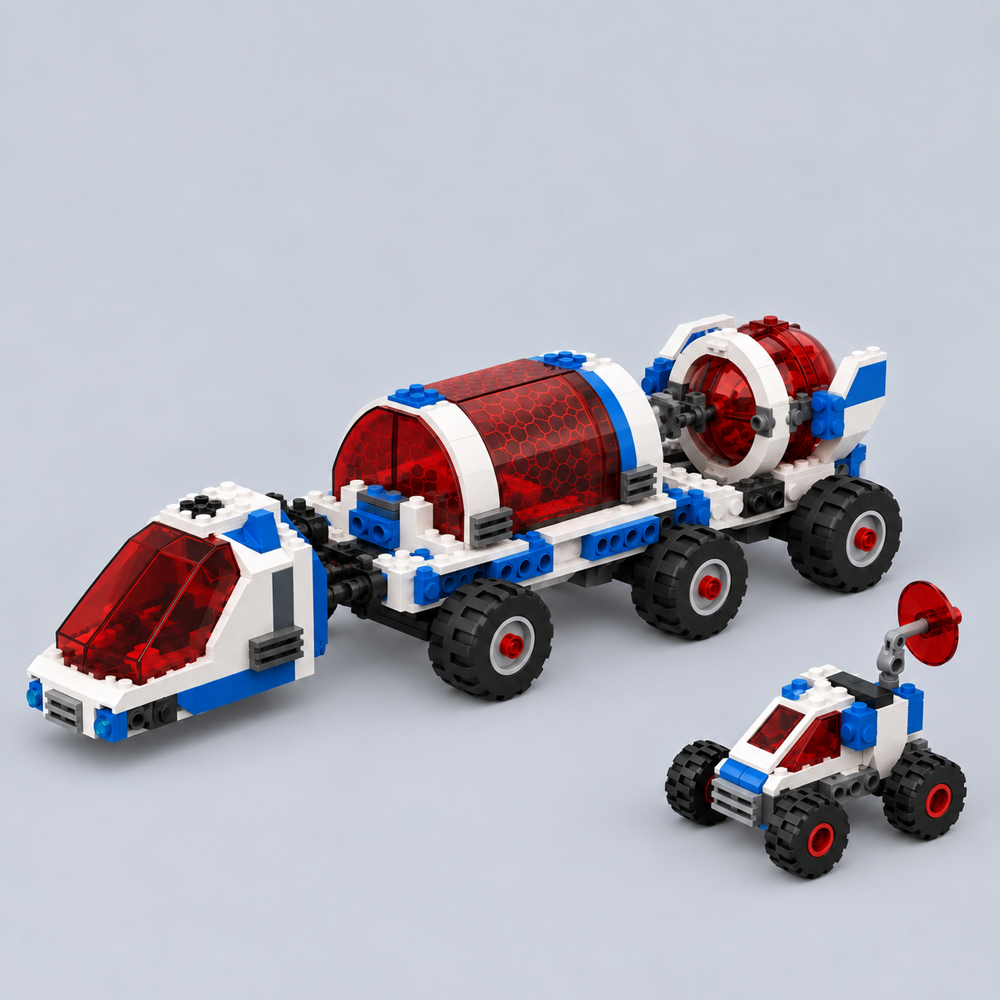
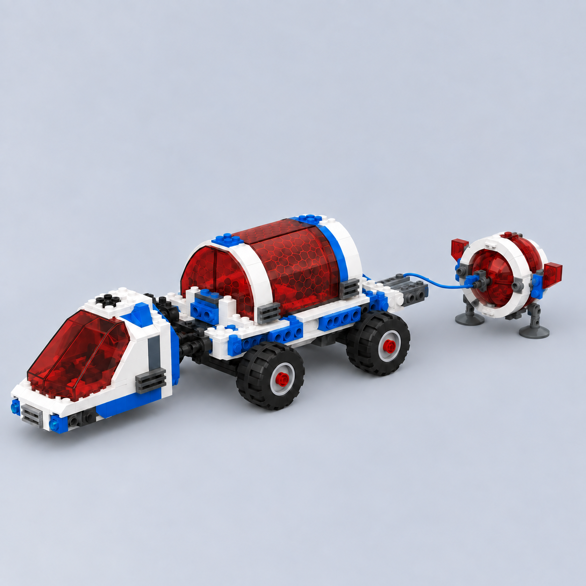

Production Design Target · пропозиція
Джерело → ігрова адаптаціяДжерело LEGO 7315Збережені модулі + наземний носій і розгортання сервісного вузла


Видимі адаптації
- Низький носій із шістьма колесами; вихідний набір коліс не має.
- Коротка напрямна висуває задній сервісний модуль.
- Дві опори тримають модуль на землі; зв’язок із носієм зберігається.
- Палітра Field Systems лишається біло-синьою; червоний купол відповідає джерелу.
Що потрібно затвердити
- Силует і пропорції 7315 над трьома парами коліс.
- Задній сервісний модуль на напрямній із двома опорами.
- Збереження трьох окремих джерельних модулів і палітри.
Технічні деталі
Перевірка:
./tools/verify.sh --targeted design-package та перевірка пакета й зображень. Кількість і розташування коліс та з’єднання розгортання залишаються рішенням режисера; справжню посадку перевіряє T084.Статус: запропоновано для огляду; не прийнято. T084: не розпочато.